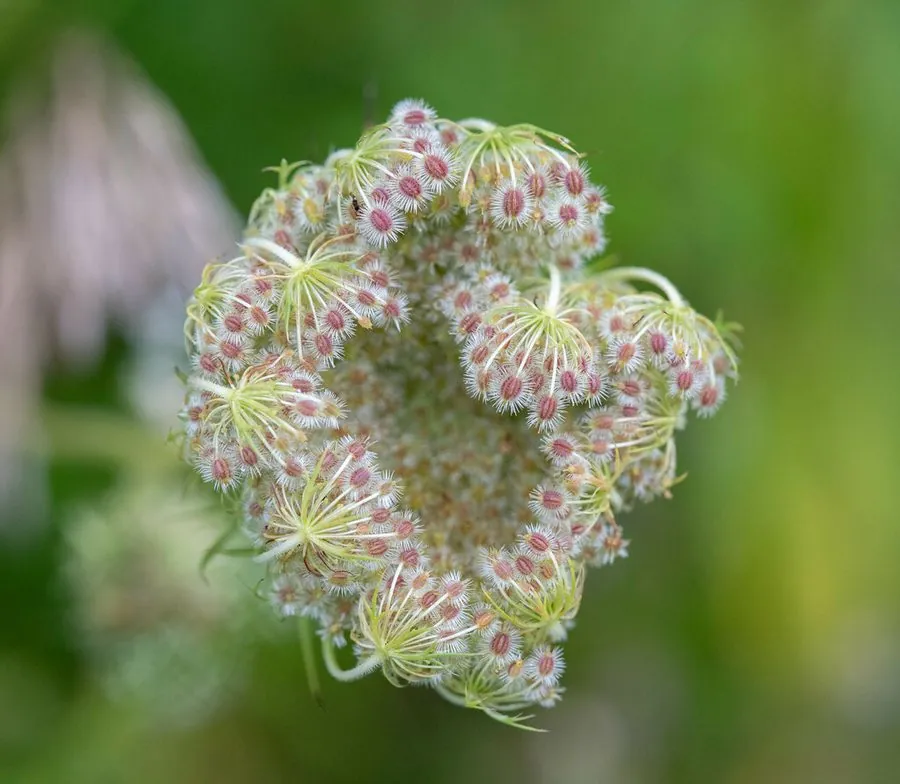

农作物与经济植物 · 植物界
胡萝卜 Daucus carota

胡萝卜的肉质根富含 β-胡萝卜素，可生食、炒食和炖汤，是重要的根菜作物，喜冷凉气候、耐储运。
- 分类
- 门被子植物门纲双子叶植物纲目伞形目科伞形科属胡萝卜属
- 栖息环境
- 温带凉爽地区的沙壤土，喜凉爽、光照充足与深厚土壤
- 地理分布
- 原产阿富汗与中亚，现主产于中国、印度、美国、俄罗斯等地
- 保护级别
- 暂无评估（栽培作物）
物种志
胡萝卜是伞形科一二年生草本，株高 0.3–0.8 m。基生叶为二至三回羽状复叶，小叶细裂，叶柄基部有叶鞘。肉质根圆锥形或圆柱形，皮色有橙红、紫红、黄色等，肉色橙红，富含胡萝卜素。花为复伞形花序，白色或淡黄色，二回伞形，有特殊香气。
胡萝卜原产阿富汗与中亚一带，栽培历史已有 2000 多年，后传入中国和欧洲，如今世界各地广泛种植。它喜凉爽、光照充足，适宜在疏松深厚、排水良好的沙壤土中种植，出苗期需保持土壤湿润。胡萝卜肉质根富含 β-胡萝卜素（维生素 A 前体）、膳食纤维和糖分，可生食、炒食、炖汤、榨汁，也可加工成脱水蔬菜和胡萝卜素色素；叶片可作饲料。β-胡萝卜素是脂溶性的，用油烹调更利于吸收。中国是世界上最大的胡萝卜生产国之一。
形态与习性
- 株高0.3–0.8 m
- 叶二至三回羽状复叶，小叶细裂
- 肉质根圆锥形或圆柱形，橙红或紫红
- 营养富含 β-胡萝卜素
- 用途生食、炒食、榨汁、脱水蔬菜
- 花白色或淡黄，复伞形花序
趣味知识
- 胡萝卜的橙色来自 β-胡萝卜素，是维生素 A 的前体。
- β-胡萝卜素是脂溶性的，用油炒或炖更利于人体吸收。
- 胡萝卜原产中亚，后来才传到中国和欧洲。